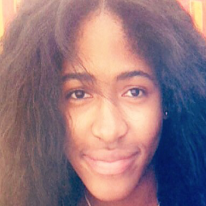
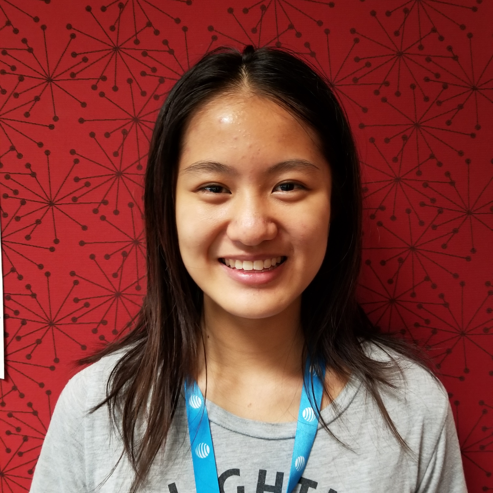
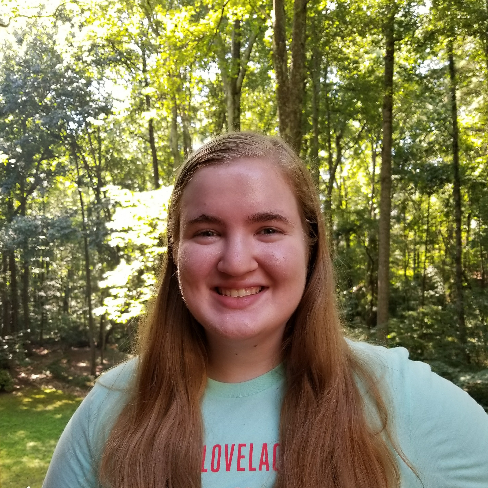
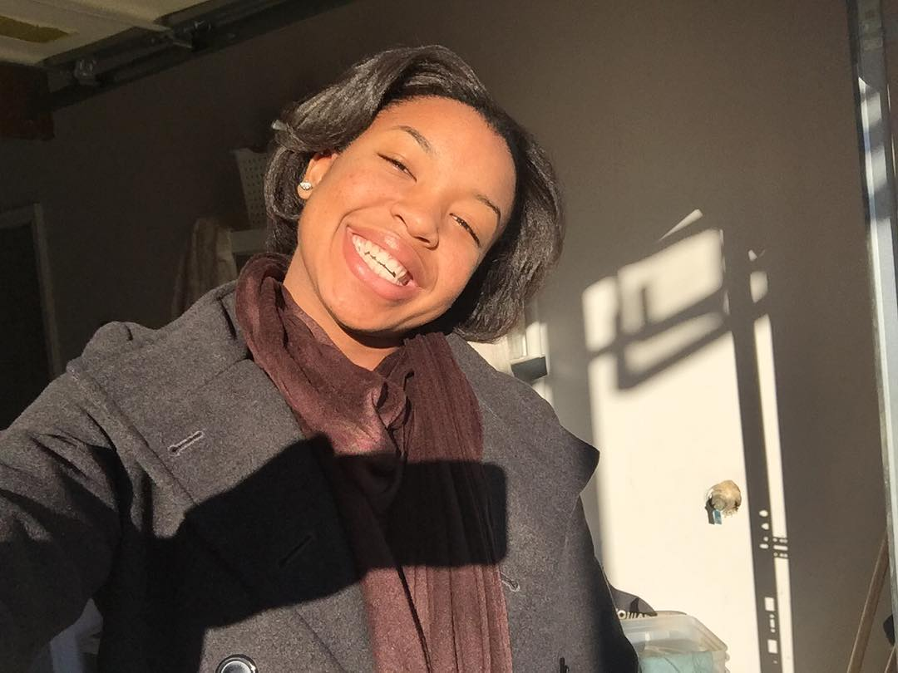

Meet Us

Kayla Blount is a native of Atlanta, Georgia. As a high school Senior, her interests include playing the viola, singing, drawing, and solving puzzles/problems. Many experiences lead her down the path towards the Girls Who Code Summer Immersion Program. She wanted to learn more about Computer Science and the STEAM field. The program has caused Kayla to gain more of an interest in robotics and HTML/CSS. It has also encouraged Kayla to stay on the path of User Experience Design(UX Design) as a future career. Kayla wants to help make ResourCS get more teens and young adults involved in Computer Science. She understands that the world is changing and technology is the future, and she wants to be a part of that change. She hopes that ResourCS can be someone's first steps to becoming a successful Computer Scientist.

Joyce Pan is a high school Junior from Atlanta, GA. She enjoys drawing, playing various musical instruments, and learning new skills. She is interested in the Computer Science field because her dad is a software engineer. To satisfy her curiosity, Joyce was introduced to a program called Girls Who Code Summer Immersion Program, where she learned multiple coding languages and became aware of the gender gap in this field. In this program, she decided to a part of ResourCS to help young people learn how to code in a more personalized and simplified way. In the future, she wants to learn new skills and work in the cyber security field.

Grace Pfohl is a high school Junior from Woodstock, Georgia. She is interested in reading novels, writing, community service, and playing music on her flute. She values the diverse paths that the Computer Science field offers. Having wanted to participate in a coding program for years, she applied for the seven week 2017 Girls Who Code Summer Immersion Program at AT&T Atlanta Midtown. The program has allowed her to develop an appreciation for topics such as algorithms and robotics. In the future, she wants to major in Computer Science and continue to develop her skills. She is so excited about ResourCS because it is exactly the resource she wanted to learn Computer Science with before she began Girls Who Code.

Sana Rehmani is a high school Senior from Duluth, Georgia. She is interested in music, traveling, volunteering, and learning languages in her spare time (Korean and Chinese). Over the course of the summer of 2017, she took the time to attend the Girls Who Code Summer Immersion Program because she was interested in Web Development. This program has allowed her to create a platform like ResourCS, as she is interested in encouraging independent studying and learning within a CS community. Her goal in the future is to continue the pathway of technology in college.

Amari Robinson is a high school Junior from Atlanta, Georgia. She enjoys playing basketball and is heavily involved in her community. She joined the Girls Who Code Summer Immersion Program to learn how to code and the different skills necessary to make a website, game, etc. In the duration of the program, she became more familiar with HTML/CSS (front end development). Also, she learned from various speakers and in the program that in Computer Science there is no specific path but a range of opportunities. She aspires to work in education and she knows her background in Computer Science will benefit her in her career. She, along with her group members, founded ResourCS to provide guidance for those interested in Computer Science.